Harness security for AI agents · open source · Apache 2.0
Your agent asks. A Lock holds the keys. You sign in lox run.
Claude Code, Codex, lea or any MCP client works on your SQL databases, RabbitMQ, files, logs and outbound HTTP(S) through a Lock. The Lock keeps the credentials and the only connection, in a container the agent cannot reach, and masks every value it returns. Each request becomes a masked ticket: reads pass by a rule, while a connection, a write or DDL waits for your y in lox run, a terminal outside the agent's harness.
An agent harness is the program that runs a model as an agent and hands it tools; harness security is the layer around it, separate from the model's own guardrails because it holds whatever the model is talked into. Every approval is answered outside the harness, so an agent can never answer its own.
brew trust davidgodefroid/tapandbrew install davidgodefroid/tap/lockfamilylox add locksqlin your project (or lockmq, lockfile, lockhttp, locklog)lox runin a terminal of its own, while your agent (claude, Codex orlea) works in another. Quick start
ticket shop / primary · locksql
- asked by
- claude, in its harness
- class
- write · always asked
- request, masked
UPDATE orders SET status = ‹p***(4)›
WHERE id = ‹4***(5)› -- 1 row- the hub holds
- this masked screen only: no clear value, no result
approved · you · y · 14:03
signed decision bound to this exact plan; the Lock runs the UPDATE only on it
audit 14:03 claude ◆ shop primary write ✔ you ✓
lox run shows it to you. Answer n, or nothing, and the Lock never runs it.One Lock per data source, and lea for the agents
-
SQL databases
locksql
Every SQL statement your agent writes is parsed and weighed before it runs; personal data comes back masked.
-
RabbitMQ
lockmq
Agents inspect your brokers through read-only operations; every message read approved, bodies masked.
-
Files
lockfile
Agents ask yes/no questions about a file and get 1 or 0 — never a byte, a name or a size.
-

Web · HTTP(S)
lockhttp
Reads of trusted hosts pass; anything that sends data or reaches an unknown host waits for you. The gate can add an API's credential itself, so the agent never holds it.
-
Logs
locklog
Harness security for AI agents on log sources: log reads come back masked — local sources on Linux, Loki and Elasticsearch/OpenSearch on Linux and macOS.
-
Claude Code agents
lea
Many agents in a container that never sees your SSH keys or your private network, from one deck. Their Lock requests wait for
lox run, outside lea.
01
One write, from the agent's request to your signature
In-agent approval is a convenience; an approval outside the harness is a boundary. Here is what happens to one UPDATE, line by line, as the audit log records it. Each Lock reaches only the endpoints of its reviewed profile, and decisions can also come from an auto rule, lox approve, Slack, Telegram or a paired phone.
- 14:03:01agent
Asks its Lock client, an MCP server with no credential and no connection, to run
UPDATE orders SET status = 'paid' WHERE id = 41277. The client passes it over a socket to the Lock. - 14:03:01lock
In its own container, it parses the statement, classes it a write and masks every value:
status = ‹p***(4)›. It runs nothing yet, and sends the hub a ticket with that masked screen. - 14:03:01hub
Queues the ticket for
lox run. The agent has no route to it; it never runs a request and never sees a result or a value in clear. - 14:03:02you
In
lox run, your own terminal. Auto mode passes reads by rule; a write is always asked, so the bell rings. You read the masked screen and press y. - 14:03:04hub
Signs the decision, bound to that exact plan and naming who decided: you, not a rule.
- 14:03:04lock
Checks the signature, runs the
UPDATE, and returns1 row updatedto the agent. On n, no answer, or a closedlox run, nothing runs and the agent only learns it was denied. - lateraudit
lox auditlists the line: who asked, the masked request, who or which rule decided, and the outcome.
![The request flow, animated: the agent and its Lock client run in the agent harness; the client reaches the lock over a socket; the lock sends a masked ticket to the hub; lox run, in your own terminal outside the harness, decides by an auto rule or asks you; the hub signs the decision and the lock runs the request only on it, then returns masked results to the agent. The agent never talks to the hub, and the hub never sees a query or a result in clear. Four scenarios loop: an auto SELECT, a connection asked once per profile, an UPDATE you approve, a DELETE you deny.](assets/flow-light.svg)
02
One boundary around the agent, one console per data source
Where agents run
lea
Claude Code agents in a container that sees one projects directory. They reach the internet only through an egress proxy that refuses your private network.
What agents reach: one Lock per data source, its console started by lox run
locksql
SQL databases
lockmq
RabbitMQ brokers
lockfile
Files on S3, SFTP or disk
lockhttp
Outbound HTTP(S)
locklog
Log sources
Shared core
lockkit
The console, hub-attached only, its isolated account and socket, policies the AI may tighten and only you loosen, the approval screen and the hub's tickets, the audit log, credentials kept in the console (an ask password typed at the first connection in lox run and sealed to the Lock, or a login read from HashiCorp Vault), personal-data masks, MCP and agent wiring.
One hub runs every Lock. lox run starts the hub and each Lock's console with Docker Compose; there is no standalone console. Each Lock but lockhttp sits on an internal network, behind an egress gateway that reaches only its reviewed profile's endpoints: no internet, cloud metadata or other host port. lea's agents reach the Locks' sockets through .lockfamily/up.json, and so does any Claude Code on the host, through each Lock's launcher (locksql mcp, …); no agent reaches the hub. lea is optional (claude works too), except for lockhttp, whose gate runs beside lea's proxy.

~/.ssh and reaching 192.168.1.10 are blocked.03
The hub: every Lock's tickets, answered from one place
- locksql
- lockmq
- lockfile
- lockhttp
- locklog
queues masked tickets
signs decisions
runs nothing
lox runyour terminallox approve- Slack, Telegram
- a paired phone
Every Lock runs attached to lockhub. Its console holds the credentials and checks each request, then sends the hub a signed ticket with the masked screen; lox run decides it; the hub signs the decision, bound to the exact plan, and the Lock runs only on that signed decision. The hub never runs a request, never sees its results and never sees values in clear. The lox CLI sets each source up (lox add), reviews every change with you, runs the hub and the Locks with Docker Compose and serves the decisions (lox run), and lists what happened (lox audit).
lox run. The one terminal you keep open, outside lea and any agent harness. It shows every ticket and decision live, masked, and runs in auto mode by default: reads are approved by the rule, writes and DDL are asked every time, a connection once per profile per session (anaskpassword is typed there and sealed to the Lock), a new lockhttp endpoint once per session. locksql v0.17.0 and lockmq v0.8.0 take auto rules per profile (auto,askordeny). Shift+Tab switches to manual; the bell rings only for a question; quitting fails closed.- Other facades.
lox approve, Slack, Telegram, and a paired phone (an installable web app the hub serves, with optional Web Push). Each risk class goes only where it is safe to answer (see “routing” below); a workspace can narrow the routing, never widen it. - Clear values. Screens are masked everywhere. With
reveal: trueon a lock, o (or Ctrl-O, where the terminal passes it) inlox approveshows a ticket's clear values, sealed by the lock to that facade: the hub relays ciphertext. Never on chat. - Phones. With
devices: truea lock pins the paired phones, and a decision taken on a phone is signed by the phone itself (WebAuthn): the hub's key alone cannot pass for it.require_devicelists the risk classes only a phone's signature may approve;seal_clearseals the clear screen to the phones. - lea. lea v0.9.0 no longer handles approvals: it starts no hub and shows no ticket. When the projects directory declares Locks and no
lox runserves them, lea says to run it, and the agents' requests wait at the hub. lea mounts.lockfamily/read-only in its agents and gives them the Locks' sockets named in.lockfamily/up.json. No agent reaches the hub. - Host agents. Any Claude Code on the host reaches the same Locks: each Lock's launcher, as
.mcp.jsonstarts it (locksql mcp,lockmq mcp,lockfile mcp,locklog mcp), finds the nearest.lockfamily/up.jsonup from the working directory (the project or a parent) and mounts the Lock's socket read-only once Docker confirms it islox run's. Approve inlox run.
# 1. In the project: Claude Code's files (its MCP server is `locksql mcp`),
# a database profile (engine, host, TLS, where the password comes from;
# never the password), then doctor --fix (.locksql/ as lox run reads it)
cd ~/projects # your project (with lea: lea's projects directory)
locksql init claude
locksql profile add --profile orders
locksql doctor --fix --yes
# 2. Declare the lock: pinned by digest to its latest signed release;
# the hub's image is pinned with it
lox add locksql orders --profile orders
# 3. In a terminal of its own, outside the agent: review everything,
# start the hub and the console, then serve the decisions
lox runA database on this machine is host.docker.internal; on Linux it must listen on the Docker bridge, not only on 127.0.0.1. For lea's agents, the lock names your uid (allowed_uids: [1000], id -u, in lockfamily.yaml; lox add adds it when lea is installed). Then ask an agent: “how many orders were placed yesterday?”. lox run asks you once for the connection, then the read runs, masked; a write waits for your y every time. lox doctor checks the setup, the egress allowlist included, and changes nothing. How lox run, lea and host agents fit
lox run [--manual] [--no-start] [--no-upgrade] [--review] [-v]
[--pin sha256:DIGEST] [--rotate hub|INSTANCE|all]
# review, start the hub and the locks, then serve decisions live:
# auto mode (Shift+Tab: manual), a: the audit, q q: quit (fail closed);
# --no-start: serve only; --no-upgrade: keep the pinned images;
# --review: everything, line by line; -v: cosign's and docker's output;
# --pin: the hub image by digest; --rotate: replace a key first
lox init [--review] [--hub-image REF]
# start the project's hub alone; asks nothing; hints at the sources its files name
lox add TYPE # locksql, lockmq, lockfile, lockhttp, locklog: its questions, profile, declaration,
# a short review, the console's questions; nothing kept on a failure
lox add TYPE INSTANCE [--version vX.Y.Z | --image REF] [--profile P] [--hub-image REF]
# the older form: only declares the lock, pinned by digest, cosign-verified
lox add slack --team T… --channel C… --user U… # tokens asked at the terminal
lox add telegram --chat ID --from ID # bot token asked at the terminal
lox remove NAME [--purge] # take a lock out after one review; its profile stays unless --purge
lox import [SUB…] # merge sub-projects' lockfamily.yaml, strictest routing kept
lox attach INSTANCE # a console's start-up questions; detach: Ctrl-P Ctrl-Q
lox approve [--once] # y, n reason, s, q; o (Ctrl-O + Enter, not macOS): clear values;
# r on an expired ticket: approve again
lox mobile pair --name phone # one-time code, confirmed at this terminal
lox mobile list
lox mobile revoke NAME
lox doctor # hub, locks, keys, egress allowlists, socket, network; changes nothing
lox audit [show ID] # every exchange: masked request, rule or human, outcome
lox audit verify --data DIR --hub-key-file FILE [--lock INSTANCE=PATH] [--anchors FILE]
# the hub's audit chain and every decision's signatureThe workspace commands take --file to name another lockfamily.yaml. lox up is deprecated: it says to use lox run. lockhub
version: 1
hub:
image: ghcr.io/davidgodefroid/lockhub@sha256:…
facades: [tty, mobile, slack]
routing:
orders: [tty, mobile] # narrows an instance, never widens
slack:
team: T0123
channel: C0123
users: [U0123]
mobile:
origin: https://hub.example.ts.net # your TLS proxy or tunnel to 127.0.0.1:8444
seal_clear: true # clear values, end to end to the phone
require_device: [prod-write] # only a phone's own signature approves these
push: true # Web Push, no payload
locks:
orders:
type: locksql
image: ghcr.io/davidgodefroid/locksql@sha256:…
profile: orders # the profile the console serves
allowed_uids: [1000] # id -u of the account that runs lea
devices: true # pins the paired phones
reveal: true # o / Ctrl-O in lox approvelox run writes .lockfamily/up.json for lea and the launchers and keeps the hub's data, keys and audit log under $XDG_STATE_HOME/lockfamily/ (default ~/.local/state/lockfamily/), out of the workspace. A lockfamily.yaml at the workspace's root (the older layout) is still read, with a warning, until .lockfamily/ exists.
| Risk class | Terminal | Phone | Slack, Telegram |
|---|---|---|---|
| read, read-pii, write | yes | yes | yes, never a production ticket |
| prod-write, policy-loosen | yes | yes | no |
| unlock | yes | no | no |
| clear values | on demand: o / Ctrl-O (reveal: true) | sealed to it (seal_clear) | never |
A chat facade never answers a production ticket, whatever its risk class. Chat facades show masked screens only, every agent-supplied string escaped: a chat account is only as safe as the devices signed in to it.
04
Install, add your sources, keep lox run open
# 1. Install the Lock Family: lox, lea, the Locks' launchers and cosign
# (Homebrew asks you to trust a third-party tap once)
brew trust davidgodefroid/tap
brew install davidgodefroid/tap/lockfamily
# or into ~/.local/bin, at the tap's versions, each verified with cosign:
# curl -fsSL https://lockfamily.dev/install.sh | sh
# 2. In your project (with lea: lea's projects directory), each source, one at a time
cd ~/projects
lox add locksql # or lockmq, lockfile, lockhttp, locklog
# 3. In a terminal of its own, outside the agent: approvals live here
lox run
# 4. Your agent, in another terminal
claude # or Codex, or lealox add TYPE sets one source up and creates .lockfamily/lockfamily.yaml when it does not exist yet: its questions, the launcher's profile add, init claude and doctor, a short review of that Lock, and the console's own questions; a failure, an n or Ctrl-C keeps nothing. lox init starts the hub alone first, if you prefer: it asks nothing and lists the data sources the project's files name (.env*, compose*.yaml, config/: hints only, never a secret). A Lock added while lea runs reaches it at lea's next start: lea stop, then lea. Where to run them: for lea, in its projects directory, the only place lea reads .lockfamily/up.json; for a plain claude, in the project or any parent, since each Lock's launcher looks up from the working directory. lockfile is Linux only; locklog's local log sources are Linux only (on macOS it reads the remote sources: Loki, Elasticsearch/OpenSearch). lox add · by hand
brew trust davidgodefroid/tap # once: Homebrew asks you to trust a third-party tap
brew install davidgodefroid/tap/lockfamily # or only this tool: brew install davidgodefroid/tap/locksql
cd ~/projects # your project (with lea: lea's projects directory)
lox add locksql # its questions, then the review; lea stop, then lea, if lea runs
lox run # in a terminal of its own, outside the agentThen ask your agent: “how many orders were placed yesterday?”. lox run asks once for the connection; reads then run masked, and each write waits for your y. locksql.com
brew trust davidgodefroid/tap # once: Homebrew asks you to trust a third-party tap
brew install davidgodefroid/tap/lockfamily # or only this tool: brew install davidgodefroid/tap/lockmq
cd ~/projects # your project (with lea: lea's projects directory)
lox add lockmq # its questions, then the review; lea stop, then lea, if lea runs
lox run # in a terminal of its own, outside the agentThen ask your agent: “which queues have no consumer?”. Catalogue calls answer at once; message reads wait for your approval in lox run. lockmq.com
brew trust davidgodefroid/tap # once: Homebrew asks you to trust a third-party tap
brew install davidgodefroid/tap/lockfamily # or only this tool: brew install davidgodefroid/tap/lockfile
cd ~/projects # your project (with lea: lea's projects directory)
lox add lockfile # its questions, then the review; lea stop, then lea, if lea runs
lox run # in a terminal of its own, outside the agentPlugins are installed into the console's home (lockfile plugin install format.is-pdf@1.0.0) and applied with :review in the console. Then ask your agent about a file by its exact key. lockfile.pro
brew trust davidgodefroid/tap # once: Homebrew asks you to trust a third-party tap
brew install davidgodefroid/tap/lockfamily # or: brew install davidgodefroid/tap/lockhttp
cd ~/projects # lea's projects directory
export LEA_LOCKHTTP=1 # opt-in: lea's gate asks the hub
lox add lockhttp # its policy
lox run # in a terminal of its own, outside lea
lea # in another terminalReads of trusted hosts go through; a post, an upload or an unknown host waits for your y in lox run (or a paired phone); a new endpoint is asked once per session. A policy inject entry has the gate add an API's header for one exact host from its own secrets file, so the agent never holds the credential. lockhttp.com
brew trust davidgodefroid/tap # once: Homebrew asks you to trust a third-party tap
brew install davidgodefroid/tap/lockfamily # or only this tool: brew install davidgodefroid/tap/locklog
cd ~/projects # your project (with lea: lea's projects directory)
lox add locklog # its questions, then the review; lea stop, then lea, if lea runs
lox run # in a terminal of its own, outside the agentThen ask your agent: “what do the logs say about last night's deploy?”. Log reads come back masked. locklog
brew trust davidgodefroid/tap # once: Homebrew asks you to trust a third-party tap
brew install davidgodefroid/tap/lockfamily # or lea alone: brew install davidgodefroid/tap/lea
cd ~/projects # lea's projects directory
lea # the first run sets lea up
lox add locksql # per source; lea stop, then lea, brings it in
lox run # in another terminal, outside lea: approvals live hereOr lea's own installer: curl -fsSL https://leadeck.dev/install.sh | sh. In the first agent, run /login once. Press n for another agent. lea shows no approval: when the projects directory declares Locks and no lox run serves them, lea says to run it, and the agents' requests wait. leadeck.dev
Known limits
All of them, the hub included, are before v1: lockhttp v0.8.0 is a pre-release; lockhub v0.10.0, lea v0.11.0, locksql v0.17.0, lockmq v0.8.0, lockfile v0.8.0, locklog v0.2.1 and lockkit v0.13.1 may still change. Auto mode approves reads by rule: switch to manual (Shift+Tab) to answer every ticket yourself. The console is the enforcement point and runs hub-attached only; skills and tool descriptions only guide the agent. Masking is best effort. Each project documents what the agent can see and its residual risks in its security model: locksql, lockmq, lockfile, lockhttp, locklog, lea. Chat facades never answer production tickets: a chat account is only as safe as the devices signed in to it.